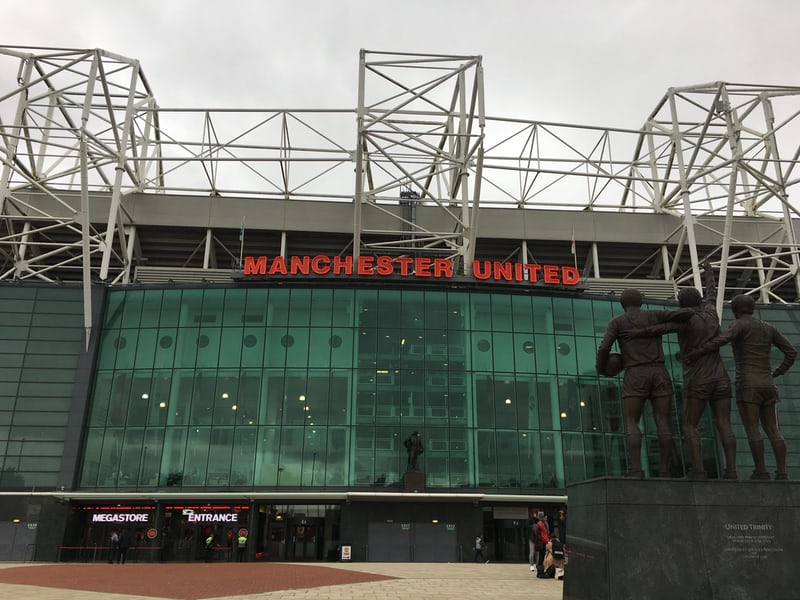

맨체스터 유나이티드 풋볼 클럽(Manchester United Football Club)은 잉글랜드 맨체스터에 있는 잉글랜드 프로 축구 구단이다. 1964-65 시즌 이래 단 1번의 시즌을 제외하고는 잉글랜드에서 최다 평균 관중 기록을 차지해왔다. 프리미어리그 개편 당시 원년 구단이었으며, 현재까지 계속 소속되어 있다. 프리미어리그 최다우승을 하고 잉글랜드에서 유일하게 트레블을 달성했다.
맨체스터 유나이티드 FC는 2010-11 시즌 프리미어리그 우승으로 잉글랜드 프로축구 역사상 19번째 1부 프로축구리그 우승을 기록해, 기존에 리버풀 FC가 갖고 있던 기록과 같은 기록을 경신했다. 구단은 1991-92 시즌부터 2012-13 시즌까지 단 한 차례도 3위 아래의 순위로 시즌을 마친 적이 없을 정도로 프리미어리그 출범 이래 꾸준한 성적을 거두어왔다. 또한 구단은 잉글랜드 FA컵에서 총 12회 우승하여 아스널 FC 다음으로 많은 우승기록을 보유하고 있다.